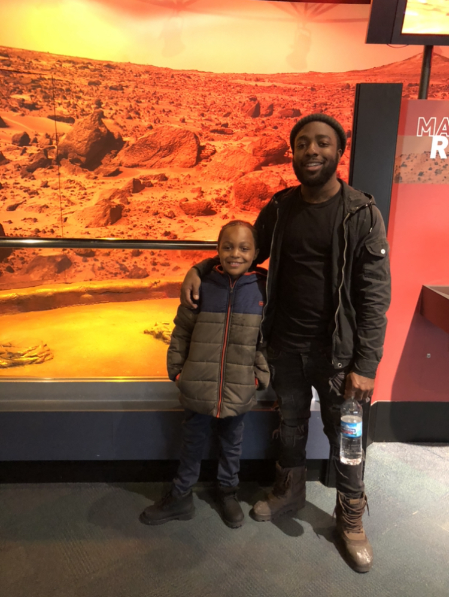

<!DOCTYPE html PUBLIC "-//W3C//DTD HTML 4.01//EN" "http://www.w3.org/TR/html4/strict.dtd">
<html>
<head>
  <meta http-equiv="Content-Type" content="text/html; charset=utf-8">
  <meta http-equiv="Content-Style-Type" content="text/css">
  <title></title>
  <meta name="Generator" content="Cocoa HTML Writer">
  <meta name="CocoaVersion" content="1894.4">

  <link rel="stylesheet" href="assets/reset.css">
  <link rel="stylesheet" href="https://stackpath.bootstrapcdn.com/bootstrap/4.4.1/css/bootstrap.min.css">

  <link rel="stylesheet" href="assets/style.css">


  <style type="text/css">
  </style>
</head>
<body>
</body>
</html>


<body>

 <header>

    <Navbar>
      
       <div id="nav1">Jesse D. Williams Jr.</div>

      <div id="nav2"><a id="h2" href="file:///Users/jessewilliams/Desktop/Jesse-Williams-Prework/Module1_assessment/index.html">About Me</a></div>

      <div id="nav3"><a id="h3" href="file:///Users/jessewilliams/Desktop/Jesse-Williams-Prework/Module1_assessment/portfolio.html">Portfolio</a></div>

      <div id="nav4"><a id="h4" href="file:///Users/jessewilliams/Desktop/Module1_assessment/contact.html">Contact</a></div>

    </navbar>

</header>

  <div id="back"></div>

  

  <div id="container" class="container">

   <div id="port" class="row">About Me</div>  

   <div class="row">

     <div id="image6" class="col-3"></div>

     <div class="col-9" id="p1"> Hi, My name is Jesse D. Williams Jr. I grew up in Chicago, Illinois on the Southside of town. I graduated from Simeon Career Academy High School where I majored in Culinary Arts. You may recognize Simeon as the Alma Mater of Derrick Rose and Jabari Parker. Go Wolverines! After Graduating from Simeon, I went on to Illinois State University where I majored in Mathematics. I had no clue that I'd find such success as a math major, so it was actually a big surprise to me that I completed the degree with honors. I then went on to complete a Master's in Bioinformatics Sciences from the University of Illinois at Chicago. To this day, I find that Master's degree to be the greatest test of endurance that I have ever faced in my life. But I did it! And I'm very proud of that! I also have a passion for teaching. I have taught at 6 different high schools and 2 different universities over the years and have enjoyed every bit of it.</div>
       
   </div>

   <div class="row" style="margin-top:15px;" id="p2">
      <div class="col-12"> Outside of Academics, I consider myself to be a very family-oriented and goal-oriented person. The two things I enjoy most is time with loved ones and checking a task off of my "To-do" list. Currently on my "To-Do" list is to become a software engineer. I'd say, with the Software Engineer Development program at Genesis10, I'd be well on my way towards checking that off of my list.  </div>
   </div>

   <div class="row" id="p3">
       <div class="col-12" style="margin-top:15px;"> A random fun fact about myself is that from a young age, I practiced tumbling. I was a member of the Jesse White's Tumblers and was once a member of the gamma phi circus. My act was tumbling and vaulting. I had a lot of fun doing so and one day hope to open a tumbling gym. </div>
   </div>

    

  </div>


<footer id="footer">
    Copyright&copy
</footer>

  
</body>

